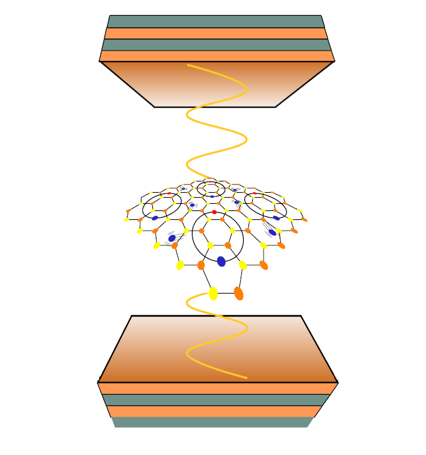
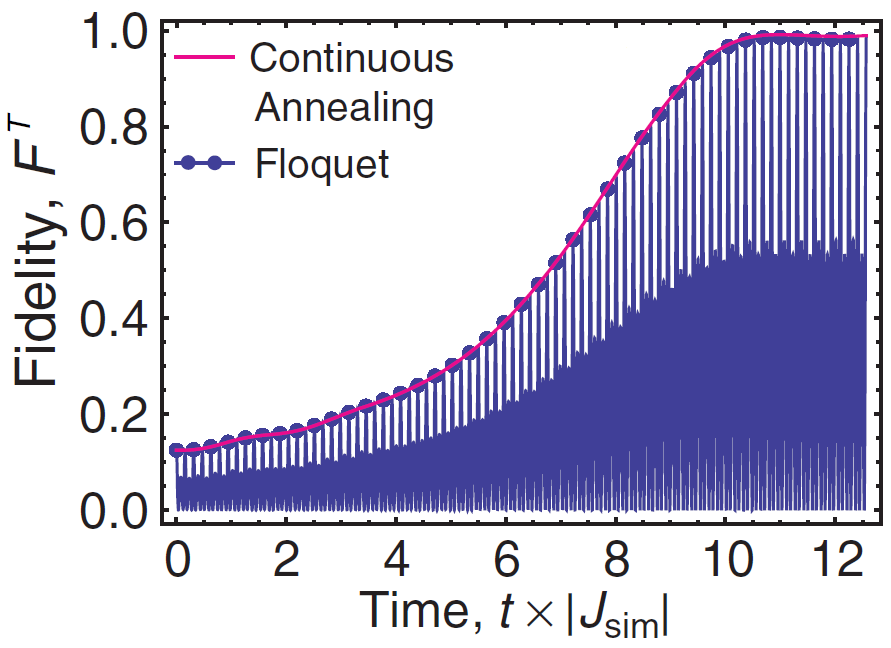
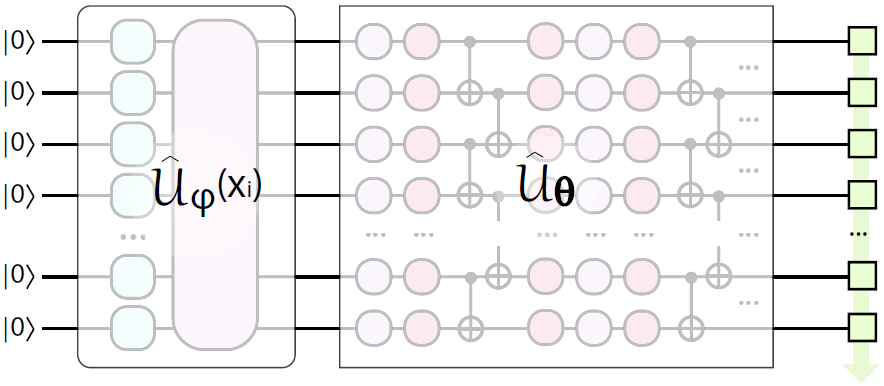

Quantum Optics

Quantum optics is a platform for many fundamental and technological advances, starting from lasers, single-photon sensors, and finishing with prime realisations of quantum computers.
We are interested in various aspects of quantum optical systems, with an emphasis on the regime of strong light-matter coupling.
In this regime the hybrid quasiparticles arise – exciton-polaritons – that due to excitonic component become interacting.
Describing systems where nonlinear photons (polaritons) interact strongly with each other is a central topic of research at QuDOS. We study
diverse systems at strong coupling, from conventional III-V semiconductor QWs, to 2D materials (atomically thin monolayers) and organic compounds (dyes, proteins), where
we recently developed theories of nonlinear interaction and single photon emission.
The goal of research at QuDOS is developing practical semiconductor optical systems where nonlinearity leads to the regime of photon blockade, and establishing the
field of quantum polaritonics.
Quantum Dynamics

Quantum simulation allows studying the system dynamics that often cannot be calculated due to complexity of the state space.
We work with various simulation platforms, from superconducting circuits to optomechanical system and Rydberg atoms, developing theories and strategies for
efficient simulation.
One fascinating example is the concept of a quantum time crystal, described as a quantum system that exhibits periodic correlations in the many-body ground state.
We develop understanding of systems where time ordering crucially defines their properties.
Another powerful approach is Floquet simulation, where fast modulation of system parameters allows changing the effective Hamiltonian and response.
The ultimate goal is to simulate and learn strongly-correlated systems, including the elusive Fermi-Hubbard lattices.
Quantum Computing

Quantum computers use the rules of quantum mechanics to perform computation in a way being inherently different from classical computation.
In the absence of noise they promise to achieve the algorithmic speed-up for the selected problems in areas of chemistry, material science, optimization,
and machine learning. However, modern QC devices, in most cases built on quantum optical principles, are coupled to environment and thus operate in noisy setting.
Designing solutions (algorithms, device schemes) for QCs in the presence of noise is an outstanding challenge.
At QuDOS we are developing protocols for NISQ devices using several operating principles. First, targeting low-depth operation, we propose variational protocols
that can solve problems in material science, chemistry, and multisimulation. Our goal is providing blueprints for achieving the quantum advantange.
Second, searching for efficient digital-analog approaches, we develop dynamics-based quantum computation, where evolution is used for learning low energy
properties of correlated models.
Finally, we are doing research in quantum machine learning and quantum circuit differentiation. We consider the development of efficient derivative-based
optimization as a major tool for near- and long-term quantum computing.